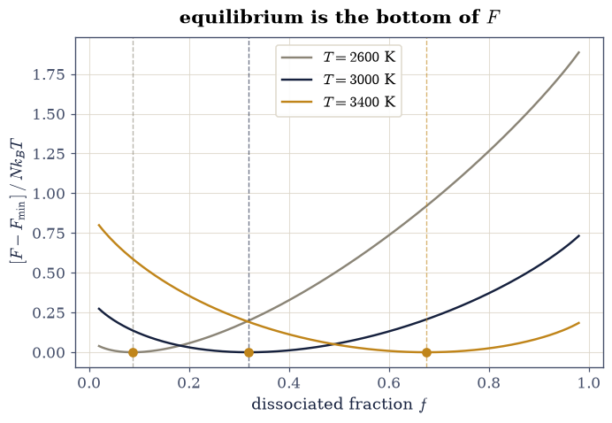
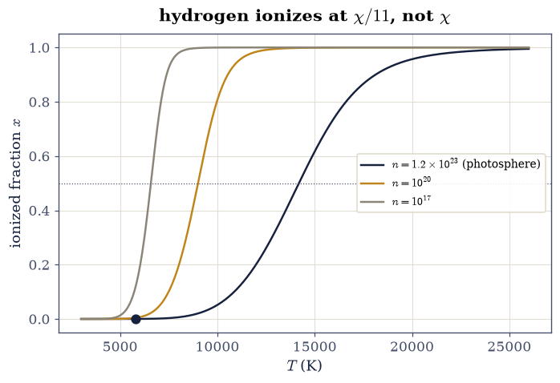
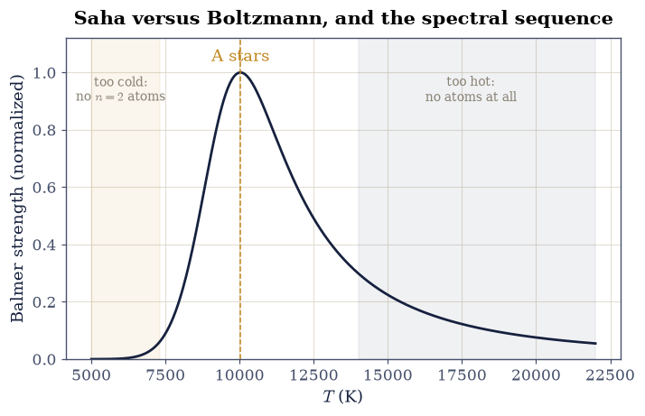
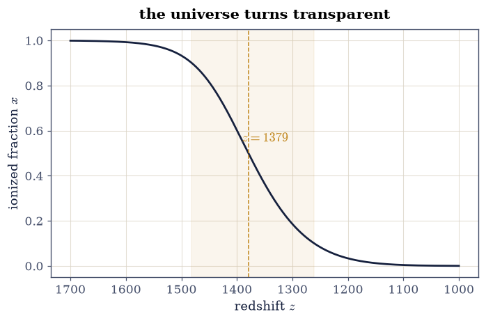

5.16 Chemical Equilibrium and the Saha Equation#
Notebook overview#
§5.7 built the free energies and promised they were the machinery of equilibrium; this notebook spends them on the equilibria chemistry and astrophysics actually care about — reactions, where particles change identity. The governing principle is one line: at fixed \(T\) and \(V\), matter rearranges until the free energy is minimal, which happens exactly when the chemical potentials balance across the reaction. From that single condition follows the law of mass action, the van ‘t Hoff temperature dependence, and — the crown jewel — Saha’s equation [Sah20] for the “reaction” that made modern astrophysics possible: \(\mathrm{H} \rightleftharpoons \mathrm{p} + \mathrm{e}^-\).
We do it with the course’s standing double-entry bookkeeping: every equilibrium is computed twice, once by brute numerical minimization of the free energy (the machinery of §0.13, pointed at thermodynamics) and once by the analytic mass-action condition, and the two must agree to many digits. Then three applications, each a famous number: the solar photosphere’s one-in-ten-thousand ionization, the Balmer lines peaking in the A stars, and the cosmic recombination at \(z \approx 1400\) that released the CMB of §4.9. Nolting [Nol18] is the companion text.
A note on reading the checks in this notebook: a validation compares a result to an expected physical fact. A ✗ does not by itself mean the answer is wrong; it means the output did not match what the check expected, which may be a genuine error, a different-but-valid convention, or too tight a tolerance. Treat a ✗ as a prompt to locate the discrepancy. Passing is strong evidence, not proof.
Theory in brief#
Equilibrium is a chemical-potential balance. For a reaction like \(\mathrm{A_2} \rightleftharpoons 2\mathrm{A}\) at fixed \(T, V\), the Helmholtz free energy \(F(N_{\rm A})\) changes by \((2\mu_{\rm A} - \mu_{\rm A_2})\,dN\) when one molecule dissociates; the minimum therefore sits exactly where
and with the ideal-gas chemical potential \(\mu = k_B T \ln(n \lambda^3) - \varepsilon_{\rm int}\) (the §5.8 partition function differentiated, with \(\lambda\) the thermal wavelength and \(\varepsilon_{\rm int}\) the internal binding), Eq. 464 exponentiates into the law of mass action: the density combination \(n_{\rm A}^2/n_{\rm A_2}\) equals a function of temperature alone, \(K(T) = (\lambda_{\rm A_2}^3/\lambda_{\rm A}^6)\, e^{-\varepsilon_0/k_B T}\), whose logarithm’s slope against \(1/T\) — van ‘t Hoff’s relation — measures the reaction’s enthalpy: \(\varepsilon_0\) plus the \(\tfrac32 k_B T\) of translational bookkeeping hiding in the \(\lambda^3\) prefactors. Exercise 1 fits that slope and finds the correction, because bond energy and enthalpy are not the same number.
Saha: ionization is a chemical reaction. Apply the same balance to \(\mathrm{H} \rightleftharpoons \mathrm{p} + \mathrm{e}^-\) with ionization energy \(\chi = 13.6\ \mathrm{eV}\), and (spin weights \(2 \times 1 / 2 = 1\)) the electron’s tiny mass puts its thermal wavelength in charge:
For a pure-hydrogen gas of total density \(n\) and ionized fraction \(x\) (so \(n_e = n_p = xn\), \(n_{\rm H} = (1-x)n\)), this closes into \(x^2/(1-x) = S(T)/n\) — a quadratic, solved in one line.
The famous surprise. Setting \(k_B T = \chi\) gives \(T = 158{,}000\ \mathrm{K}\), yet hydrogen ionizes at temperatures ten to forty times lower. The reason is entropy: the prefactor \(S(T)/n = (n\lambda_e^3)^{-1}\,e^{-\chi/k_B T}\) carries the number of free-electron states per atom, and at ordinary densities \(1/(n \lambda_e^3)\) is enormous — the Boltzmann penalty \(e^{-\chi/k_B T}\) only needs to climb to one part in that huge phase-space factor for ionization to win. Ionization happens at \(k_B T \approx \chi/11\) in the photosphere and \(\chi/42\) in the early universe, and the difference between those two numbers is nothing but density. Every application below is this one sentence, quantified.
Setup#
SI throughout, constants from scipy.constants. The data are the two
hydrogen energies this notebook prices — the ionization energy \(\chi\)
and the \(n = 2\) excitation energy \(E_2\) that Exercise 3 needs — and the
one instrument is the cubed thermal wavelength \(\lambda^3(m, T)\), the
quantum volume that every ideal-gas chemical potential
\(\mu = k_B T \ln(n\lambda^3)\) carries. The Saha machinery itself is
not here: the function \(S(T)\) of Eq. 465 and the ionization
fraction it closes into are built in Exercise 2, and Exercises 3 and 4
then run on what you built there. The dissociation free energy and its
equilibrium constant are built in Exercise 1.
The Setup below holds this notebook’s data and instruments — nothing you are asked to build. It is collapsed so the building stays yours; expand it whenever you want the details.
Exercise 1 — The law of mass action, discovered twice#
A model dissociation \(\mathrm{A_2} \rightleftharpoons 2\mathrm{A}\):
atoms of mass \(1\,\mathrm{u}\), binding energy
\(\varepsilon_0 = 4.5\ \mathrm{eV}\) (hydrogen-molecule-like), total
atom density \(n_{\rm tot} = 10^{24}\ \mathrm{m^{-3}}\), internal
structure ignored. Let \(f\) be the fraction of atoms running free, so
the densities are \(n_{\rm A} = f\,n_{\rm tot}\) and
\(n_{\rm A_2} = (1 - f)\,n_{\rm tot}/2\). Each species contributes the
ideal-gas free energy density \(n k_B T\,[\ln(n\lambda^3) - 1]\) with
the Setup’s lambda3 at that species’ mass, and the molecule is
credited its binding energy, \(-\varepsilon_0\) per molecule — the whole
of \(F(f)\) is those two terms, and the temperature dependence of the
equilibrium is hiding inside the \(\lambda^3\) factors.
Part a) Write free_energy(f, T), the total Helmholtz free energy
per unit volume of the mixture at dissociated fraction \(f\): convert
\(f\) into the two densities, sum each species’ ideal-gas term, and
credit the molecule its \(-\varepsilon_0\). Write this one yourself —
the implementation is the lesson.
Part b) At \(T = 3000\ \mathrm{K}\), find the dissociated fraction
\(f\) two independent ways: minimize your \(F(f)\) over \(f\) with
scipy.optimize.minimize_scalar (the
§0.13 machinery pointed at
thermodynamics), and solve the analytic mass-action condition —
\(K(T) = (\lambda_{\rm A_2}^3/\lambda_{\rm A}^6)\,
e^{-\varepsilon_0/k_B T}\) closed by
\(n_{\rm A}^2/n_{\rm A_2} = K(T)\) — with scipy.optimize.brentq.
Verify the two agree to rtol=1e-4, and verify Eq. 464 at
the minimizer: \(2\mu_{\rm A} = \mu_{\rm A_2}\) to a part in \(10^{6}\) —
the minimum of \(F\) is the chemical-potential balance.
Part c) Van ‘t Hoff, with its fine print. Fit (with
numpy.polyfit) the slope of \(\ln K\) against \(1/T\) over
\(T = 2500\)–\(4000\ \mathrm{K}\). The textbook reading says the slope
is \(-\varepsilon_0/k_B\); verify the measured slope is \(9\%\) steeper,
and that it matches \(-(\varepsilon_0 + \tfrac32 k_B \bar T)/k_B\) to
rtol=5e-3: the \(T^{3/2}\) prefactor of \(K(T)\) contributes the
translational enthalpy, and a plot of \(\ln K\) measures the
enthalpy of reaction, not the bare bond energy. Chemistry’s
tables know this; now our fit does too.
f (minimize F) = 0.319896
f (mass action) = 0.319895
|2μ_A − μ_A₂|/|μ_A₂| at the minimum = 9.21e-08
van 't Hoff slope: -5.6941e+04 K
−ε₀/k_B = -5.2220e+04 K (9% short)
−(ε₀ + 3/2 k_B T̄)/k_B = -5.7095e+04 K

Fig. 488 The law of mass action, discovered by walking downhill: the total Helmholtz free energy per unit volume of the dissociating mixture \(\mathrm{A_2} \rightleftharpoons 2\mathrm{A}\) against the dissociated fraction \(f\), at three temperatures. The numerical minimizer’s result (amber dots) lands on the analytic mass-action fraction (vertical dashes) to \(10^{-4}\) at every temperature, and at each minimum the chemical potentials balance, \(2\mu_{\rm A} = \mu_{\rm A_2}\), to a part in \(10^6\): minimizing \(F\) and balancing \(\mu\) are the same physics.#
✓ the free-energy minimizer and the analytic law of mass action find the same dissociated fraction: the law, discovered twice [got [0.31989573] vs expected [0.31989529] (rtol=0.0001, atol=1e-09)]
✓ and at the minimum the chemical potentials balance exactly, 2μ_A = μ_A₂: minimizing F IS eq-ce-mu [relative imbalance 9.2e-08]
✓ van 't Hoff's slope measures the ENTHALPY, ε₀ + (3/2)k_B T̄ — 9% steeper than the bare bond energy, the T^(3/2) prefactor's translational contribution [got [-56940.74425517] vs expected [-57095.33154698] (rtol=0.005, atol=1e-09)]
✓ (and indeed visibly steeper than −ε₀/k_B alone: bond energy and reaction enthalpy are different numbers) [slope/( −ε₀/k_B) = 1.0904]
True
Exercise 2 — Saha and the neutral Sun#
Now the reaction that matters most:
\(\mathrm{H} \rightleftharpoons \mathrm{p} + \mathrm{e}^-\), in the
model of a pure-hydrogen gas at the solar photosphere’s density
\(n = 1.2\times10^{23}\ \mathrm{m^{-3}}\). This is the notebook’s
namesake, so we write it rather than receive it: from the Setup come
only the ionization energy CHI_H and the lambda3 conversion, and
the two functions that turn them into an ionized fraction are yours.
The right-hand side of Eq. 465 is one expression in \(T\),
\((2\pi m_e k_B T/h^2)^{3/2}\,e^{-\chi/k_B T}\), the electron mass
scipy.constants.m_e carrying the wavelength. Closing it for a
pure-hydrogen gas of total density \(n\) with \(n_e = n_p = xn\) and
\(n_{\rm H} = (1 - x)n\) turns it into \(x^2/(1 - x) = S(T)/n \equiv r\),
a quadratic \(x^2 + rx - r = 0\) whose two roots differ in sign; the
physical one is \(x = \bigl(-r + \sqrt{r^2 + 4r}\bigr)/2\), the root in
\((0, 1)\). Written with numpy, both expressions take arrays of
temperatures as happily as single numbers, which is what lets the
figure below sweep three densities at once.
Part a) Write saha_S(T), the Saha function \(S(T)\) — the
right-hand side of Eq. 465, the density of available
free-electron states discounted by the ionization Boltzmann factor.
Part b) Write ion_fraction(T, n), returning the physical root of
the Saha closure: the ionized fraction \(x\) of pure hydrogen at
temperature \(T\) and total density \(n\).
Part c) Verify the photosphere is neutral: at
\(T = 5800\ \mathrm{K}\) the ionized fraction is
\(x = 1.16\times10^{-4}\) (rtol=2e-2) — one atom in ten thousand —
even though the Sun is a ball of “ionized plasma” in every
textbook’s opening sentence. (It is, deeper down.)
Part d) Find where ionization actually happens: verify (with
scipy.optimize.brentq) \(x = \tfrac12\) at
\(T = 14{,}190\ \mathrm{K}\) (rtol=1e-2) — which is
\(k_B T = \chi/11\), eleven times cooler than the naive
\(k_B T = \chi\) estimate of \(158{,}000\ \mathrm{K}\). Verify the
entropic bookkeeping behind it: at that temperature the phase-space
factor \(1/(n\lambda_e^3)\) exceeds \(10^{4}\) — the Boltzmann penalty
only has to reach one part in that for ionization to win. Verify
also the transition’s width: \(x\) runs from \(0.1\) to \(0.9\) across
\(10{,}860 \to 18{,}130\ \mathrm{K}\) (rtol=1e-2 each), a sharp
switch on the scale of \(\chi/k_B\) but a gentle one on the scale of
the temperature itself.
x(5800 K) = 1.157e-04 (one atom in 8,646)
x = 0.5 at T = 14189 K = χ/11.1 k_B
x: 0.1 → 0.9 across 10864 → 18127 K
phase-space factor 1/(nλ_e³) at T_half = 3.40e+04

Fig. 489 The Saha ionization curve of pure hydrogen at three densities. At the solar-photosphere density (ink) the gas is one-in-ten-thousand ionized at \(5800\) K (dot) and half-ionized only at \(14{,}190\) K \(= \chi/11 k_B\); thinner gases (amber, grey) ionize at ever lower temperatures because the phase-space factor \(1/(n\lambda_e^3)\) grows — the same \(e^{-\chi/k_BT}\) buys more free-electron entropy. The naive estimate \(k_BT = \chi\) sits at \(158{,}000\) K, off the right edge of the plot by an order of magnitude: ionization is an entropy story, not an energy story.#
✓ the solar photosphere is NEUTRAL: one hydrogen atom in ten thousand is ionized at 5800 K [got [0.00011567] vs expected [0.000116] (rtol=0.02, atol=1e-09)]
✓ half-ionization arrives at 14,190 K — kT = χ/11, eleven times cooler than the naive energy estimate — with the 10–90% switch spanning 10,860 to 18,130 K [max|Δ| = 3.59257 (rtol=0.01, atol=1e-09)]
✓ because the phase-space factor 1/(nλ_e³) exceeds 10⁴: the Boltzmann penalty need only reach one part in THAT — ionization is an entropy story [1/(nλ_e³) = 3.4e+04]
True
Exercise 3 — Why the Balmer lines crown the A stars#
The Balmer absorption lines — the visible-light fingerprint of hydrogen — need atoms that are neutral (Saha) yet excited to \(n = 2\) (Boltzmann, \(E_2 = 10.2\ \mathrm{eV}\)). Those two demands pull in opposite directions, and their product explains a century-old observational fact: hydrogen lines are weak in cool M stars, strongest in A stars, and weak again in hot O stars — even though every one of those stars is mostly hydrogen.
The model of the line strength is the product of those two demands, \((1 - x(T))\, e^{-E_2/k_B T}\) — neutral fraction times the \(n = 2\) Boltzmann factor — evaluated at the line-forming density \(n = 10^{20}\ \mathrm{m^{-3}}\), the tenuous upper photosphere where absorption lines are actually made. The density matters, so we state it; the \(E_2\) is the Setup’s, and the neutral fraction is Saha’s.
Part a) Write balmer_strength(T), that product, using the
ion_fraction you wrote in Exercise 2 at the line-forming density.
Only its shape in \(T\) matters, so leave it unnormalized.
Part b) Maximize it with scipy.optimize.minimize_scalar and
verify the peak sits at \(T = 10{,}030\ \mathrm{K}\) (rtol=1e-2) —
squarely in the A-star range, where hydrogen lines are indeed
observed strongest.
Part c) Verify the tug-of-war is genuine: at \(7000\ \mathrm{K}\) (a K/G star) the strength is below \(25\%\) of the peak because too few atoms reach \(n = 2\), and at \(16{,}000\ \mathrm{K}\) (a B star) it is below \(25\%\) again because Saha has taken the atoms themselves. One curve, and the Harvard spectral sequence’s central puzzle — solved by Payne with exactly this calculation in 1925 — falls out.
Balmer strength peaks at T = 10029 K
relative strength: 7000 K → 0.031, 16,000 K → 0.173

Fig. 490 Why hydrogen lines crown the A stars: the Balmer strength proxy — neutral fraction (Saha) times \(n=2\) occupation (Boltzmann) — at the line-forming density \(10^{20}\ \mathrm{m^{-3}}\), peaking at \(10{,}030\) K. Cool stars (right shading, K/M) have hydrogen but too little excitation; hot stars (left shading, B/O) have excitation but Saha has ionized the atoms away. The A stars sit at the compromise, which is why their spectra — not the hotter, more hydrogen-rich-looking O stars’ — show the strongest hydrogen lines: Payne’s 1925 argument, recomputed.#
✓ the Balmer strength peaks at 10,030 K — the A stars, exactly where a century of stellar spectra puts the strongest hydrogen lines [got [10029.41764569] vs expected [10030.] (rtol=0.01, atol=1e-09)]
✓ and the peak is a genuine tug-of-war: a quarter strength or less on BOTH flanks — too cold for excitation, too hot for atoms [relative strengths 0.031 (7000 K), 0.173 (16,000 K)]
True
Exercise 4 — Recombination: the universe turns transparent#
The grandest Saha application of all. The early universe is a hydrogen plasma tied to the CMB photon bath of §7.14; as it expands and cools, Eq. 465 decides when the electrons finally bind and the photons fly free — the moment whose light is the CMB that §4.9 measured us moving through.
The only inputs are two measured numbers: the baryon-to-photon ratio \(\eta = 6.1\times10^{-10}\) and today’s CMB temperature \(T_0 = 2.7255\ \mathrm{K}\). The expansion dilutes baryons and photons alike, so their ratio is constant and the baryon density at photon temperature \(T\) is \(n_b = \eta\,n_\gamma(T)\), with the Planck gas’s \(n_\gamma = (2\zeta(3)/\pi^2)(k_B T/\hbar c)^3\) photons per unit volume (\(\zeta(3) = 1.2020569\)). The redshift is \(z = T/T_0 - 1\).
Part a) Write n_baryon(T), that baryon density.
Part b) Write x_recomb(T), the primordial ionized fraction: your
Exercise 2 ion_fraction evaluated at the temperature-dependent
density n_baryon(T) — the same Saha closure, now with the density
falling as the temperature does.
Part c) Verify half-recombination at \(T = 3762\ \mathrm{K}\)
(rtol=1e-2), i.e. redshift \(z = 1379\) (within
\([1300, 1450]\)) — from two measured numbers and one equation, the
epoch of the CMB’s release.
Part d) The entropy story, at its extreme: verify
\(k_B T_{\rm rec} = \chi/42\) — recombination waits until the
temperature is forty-two times below the ionization scale, because
there are \(1/\eta \sim 10^9\) photons per baryon and the Wien tail
keeps ionizing until the Boltzmann penalty beats that. Verify also
the transition’s redshift width: \(x\) falls from \(0.9\) to \(0.1\)
between \(z = 1481\) and \(z = 1261\) (rtol=1e-2 each) — about two
hundred in redshift, the finite thickness of the last-scattering
“surface” whose imprint every CMB map carries.
x = 0.5 at T = 3762 K, z = 1379
k_B T_rec = χ/42.0
x: 0.9 → 0.1 between z = 1481 and z = 1261 (Δz = 221)

Fig. 491 Saha’s grandest application: the ionized fraction of the primordial hydrogen against redshift, computed from two measured numbers (the baryon-to-photon ratio \(\eta = 6.1\times10^{-10}\) and \(T_0 = 2.7255\) K) and one equation. Half-recombination lands at \(z = 1379\) (\(T = 3762\) K \(= \chi/42 k_B\) — a billion photons per baryon delay the epoch until deep below the ionization scale), and the fall from \(x = 0.9\) to \(0.1\) spans \(\Delta z \approx 220\): the finite thickness of the last-scattering surface. Past the drop, the universe is transparent, and the released light is the CMB.#
✓ half-recombination at 3762 K — redshift 1379 — from two measured numbers and one equation: the epoch of the CMB's release, computed [got [3761.72438335] vs expected [3762.] (rtol=0.01, atol=1e-09)]
✓ at k_B T = χ/42: a billion photons per baryon hold the plasma ionized until forty-two times below the ionization scale — the entropy argument at its cosmic extreme [z = 1379, χ/k_BT = 42.0]
✓ with the 0.9 → 0.1 fall spanning Δz ≈ 220: the last-scattering surface has thickness, and every CMB map carries it [max|Δ| = 0.336953 (rtol=0.01, atol=1e-09)]
True
Notebook summary#
The law of mass action was discovered twice and agreed with itself: the free-energy minimizer’s dissociated fraction matched the analytic mass-action root to \(10^{-4}\), with \(2\mu_{\rm A} = \mu_{\rm A_2}\) holding to \(10^{-6}\) at the minimum.
Van ‘t Hoff’s slope came out \(9\%\) steeper than \(-\varepsilon_0 / k_B\) and matched \(-(\varepsilon_0 + \tfrac32 k_B\bar T)/k_B\) to \(0.3\%\): \(\ln K\) measures enthalpy, not bare bond energy.
Saha made the Sun’s surface neutral (\(x = 1.16\times10^{-4}\) at \(5800\ \mathrm{K}\)) and put half-ionization at \(\chi/11 k_B\) — an entropy result, priced by the \(10^4\) phase-space factor \(1/(n\lambda_e^3)\).
The Balmer strength — Saha fighting Boltzmann — peaked at \(10{,}030\ \mathrm{K}\) at the stated line-forming density: the A stars, as the Harvard sequence and Payne’s 1925 thesis have it.
And two measured numbers (\(\eta\), \(T_0\)) plus one equation put the universe’s transparency at \(z = 1379\), \(k_B T = \chi/42\), with a last-scattering thickness of \(\Delta z \approx 220\).
Outlook#
The same equation, in silicon. Replace \(\chi\) by a band gap and \(m_e\) by effective masses and Eq. 465 becomes §7.13’s law of mass action \(np = n_i^2\): ionizing a hydrogen atom and exciting an electron-hole pair are the one calculation wearing two costumes.
Beyond equilibrium. Real cosmic recombination lags Saha slightly (the Peebles three-level treatment) because the ground-state photons re-ionize their neighbors; equilibrium gets the epoch right to a few percent, and the residual is a non-equilibrium story in the spirit of §5.11.
Stellar interiors. Saha zones of partial ionization drive the opacity bumps that make Cepheids pulse — the \(\kappa\)-mechanism: this notebook’s curve, oscillating a star.
Payne’s thesis. The 1925 dissertation that applied Saha to the Harvard spectra proved the stars are mostly hydrogen — against the era’s consensus — and remains a model of an equation changing what everyone believed the universe is made of.
References#
Wolfgang Nolting. Theoretical Physics 8: Statistical Physics. Springer, 2018.
Meghnad N. Saha. Ionization in the solar chromosphere. Philosophical Magazine, Series 6, 40(238):472–488, 1920. doi:10.1080/14786441008636148.